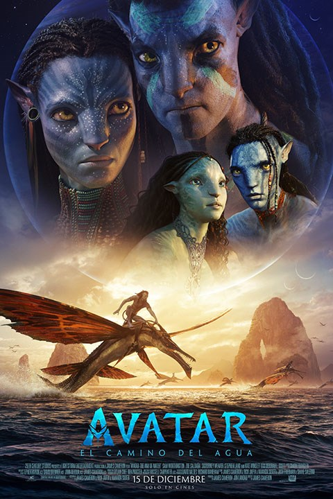

Sinopsis.
Ambientada más de una década después de los sucesos que tuvieron lugar en la primera película, AVATAR: EL CAMINO DEL AGUA narra la historia de la familia Sully (Jake, Neytiri y sus hijos), el peligro que los persigue, los esfuerzos que hacen para mantenerse a salvo, las batallas que libran para seguir con vida, y las tragedias que sobrellevan.